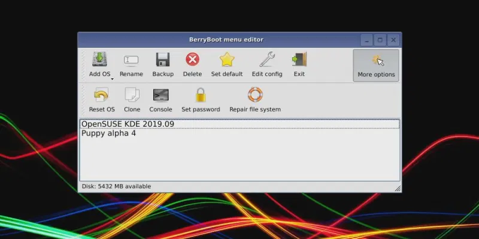
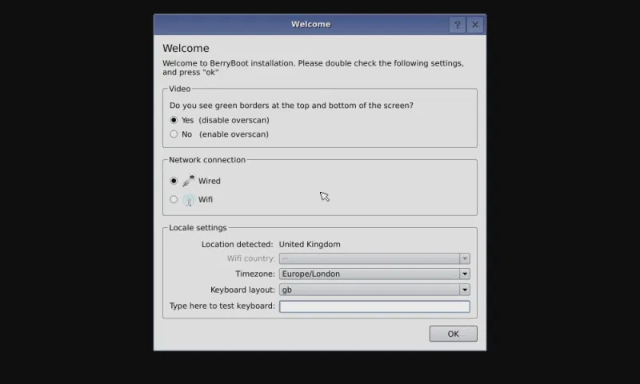
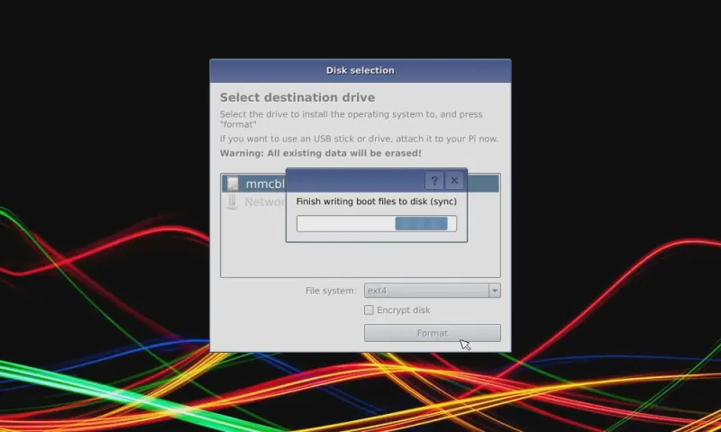
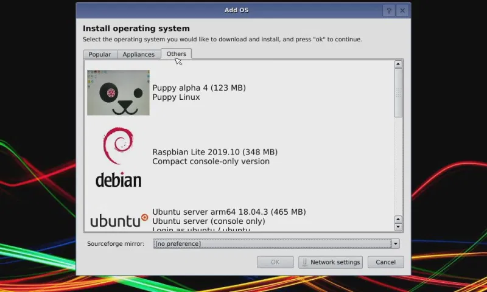

Cómo iniciar dual una Raspberry Pi con BerryBoot
¿Qué hace BerryBoot?
¿Alguna vez ha tenido problemas para instalar un archivo de imagen de disco ISO en la tarjeta SD de su Raspberry Pi? ¿Quieres más de un sistema operativo? La respuesta es una herramienta que ayuda a administrar la instalación de uno o más sistemas operativos para su Pi.
Eso es básicamente lo que hace BerryBoot. Al presentarle una selección de sistemas operativos para elegir, BerryBoot descarga los sistemas operativos y los instala, con una mínima interacción de su parte.
También le proporciona algunas herramientas de red básicas, configuraciones de ubicación e incluso un editor para ajustar la configuración. Es posible que, por ejemplo, desee editar la configuración de su red en wpa_supplicant.conf. o puede que prefiera cambiar el tiempo de espera del menú de arranque en cmdline.txt.
Usar BerryBoot es sencillo:
- Descarga BerryBoot.
- Extraiga el archivo ZIP en una tarjeta SD formateada.
- Configure BerryBoot
- Seleccione e instale uno o más sistemas operativos.
- Elija qué sistema operativo desea usar cada vez que inicie su Raspberry Pi.
BerryBoot también permite instalar los sistemas operativos Raspberry Pi elegidos en una ubicación que no sea la tarjeta SD. Si tiene almacenamiento conectado a la red (NAS) o una unidad de disco duro (HDD) conectada a su Pi, se pueden utilizar. Esta es una excelente manera de reducir la escritura de datos en su tarjeta SD y prolongar su vida útil.
Sin embargo, la tarjeta SD deberá permanecer en la Pi para arrancar.
Cómo obtener BerryBoot y arranque dual de su Raspberry Pi
Para usar BerryBoot, deberá descargarlo de Sourceforge. Este es un repositorio en línea donde se alojan muchas aplicaciones y utilidades.
BerryBoot está disponible en una de dos descargas. La primera opción es para todas las versiones de Raspberry Pi, desde la original y la Raspberry Pi Zero hasta la Pi 3B +. Sin embargo, si tiene una Raspberry Pi 4, hay una versión dedicada disponible
Copiar BerryBoot a una tarjeta SD formateada
Una vez descargado, el contenido del archivo ZIP deberá extraerse y copiarse en la tarjeta SD de su Pi.
- Comience insertando la tarjeta SD en su PC
- Busque el archivo ZIP descargado en su administrador de archivos
- Haga clic derecho y seleccione Extraer todo
- En el cuadro de diálogo que sigue, haga clic en Examinar
- Seleccione la letra de la unidad que coincida con su tarjeta SD, luego haga clic en Extraer
FOTO
Espere mientras se copian los datos, luego asegúrese de que los archivos se copien a la raíz de la tarjeta SD. Si se copian en un directorio, la tarjeta no arrancará. Cuando esté seguro de que los datos se copiaron correctamente, retire de forma segura la tarjeta SD de su computadora.
El siguiente paso es sencillo. Inserte la tarjeta SD en su Raspberry Pi y enciéndala. Asegúrese de tener un teclado y / o mouse conectados. Necesitará uno o ambos para seleccionar sus sistemas operativos.
Copiar BerryBoot a una tarjeta SD formateada
En la pantalla de su Raspberry Pi, inicialmente se le presentará una pantalla de configuración rápida. La primera sección, Video, establece el tipo de TV que está usando. Si puede ver bordes verdes en la parte superior e inferior de la pantalla, seleccione Sí (deshabilitar sobreexploración) . De lo contrario, seleccione No.
A continuación, especifique el tipo correcto de conexión de red. Si hay un cable Ethernet conectado, elija Cableado . De lo contrario, seleccione WiFi , luego busque el SSID de su red en la lista e ingrese la contraseña.
Por último, asegúrese de seleccionar la distribución correcta de zona horaria y teclado en Configuración regional. Esto asegurará que BerryBoot pueda acceder al servidor y descargar su elección de sistema operativo.
Haga clic en Aceptar cuando haya terminado.
Instalar sistemas operativos Raspberry Pi de arranque dual o múltiple
El siguiente mensaje le invita a seleccionar un destino para los sistemas operativos que está a punto de instalar.
Siempre tendrá la opción de elegir la tarjeta SD local, normalmente etiquetada como mmcblk0 . Pero si tiene una caja NAS, una unidad USB o ambas, también verá las opciones para ellas.
Una unidad USB siempre tiene la etiqueta sda . El NAS aparecerá como almacenamiento en red .
Con la elección hecha, haga clic en Formatear (si es necesario) y continúe. Deje el sistema de archivos como la opción ext4 predeterminada, probablemente no utilizará la unidad con ningún otro dispositivo.
Tenemos que tener en cuenta que al formatear, se eliminarán todos los archivos existentes en el disco. Si está instalando en la tarjeta microSD, se formateará el espacio aparte de la partición de arranque activa.
Una vez completado, se muestra el editor de menú BerryBoot. Verá varios sistemas operativos agrupados en pestañas por categoría. Dedique unos minutos a ver qué se ofrece.
En esta etapa, solo puede instalar un sistema operativo. Una vez que se haya agregado y se haya reiniciado el sistema, se pueden agregar más sistemas operativos.
Seleccione el sistema operativo, luego Aceptar para instalar. El archivo de imagen se descargará y se escribirá en la tarjeta microSD. Espere a que se inicie el sistema, luego, en el menú de inicio, haga clic en Editar.
Ahora puede instalar tantos sistemas operativos adicionales como necesite, solo asegúrese de que su medio de almacenamiento no se llene. Los números en la esquina inferior izquierda mostrarán cuánto espacio queda en el dispositivo de destino. Demasiados sistemas operativos llenarán el disco, así que manténgalo en dos o tres.
Para instalar un sistema operativo:
- Haga clic en Agregar sistema operativo para buscar un sistema operativo
- Marque la casilla de los sistemas operativos que desee
- Haga clic en Aceptar cuando haya terminado
- Seleccione el sistema operativo que desea establecer como predeterminado , que se iniciará cuando se encienda su Raspberry Pi
- > Haga clic en Salir para descargar e instalar los sistemas operativos elegidos.
Esto puede llevar un tiempo dependiendo de los sistemas operativos que elija y de cuántos.